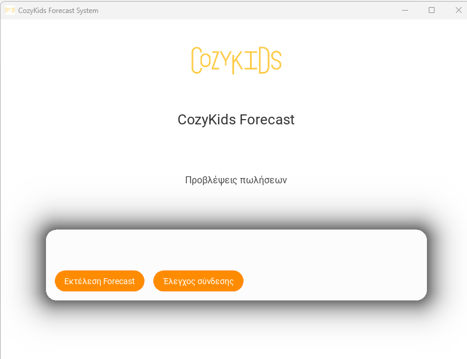
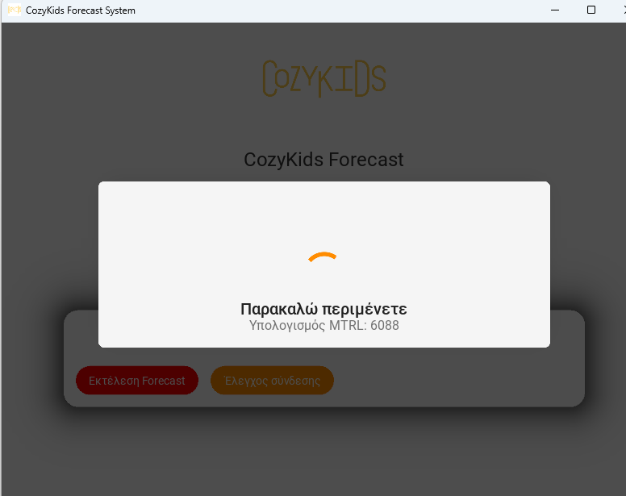

Development
JavaScript • Business Logic • Debugging • Production Support
SOFTWARE DEVELOPER • THESSALONIKI, GREECE
Software Developer focused on JavaScript, SQL Server, REST APIs, ERP customizations, system integrations and workflow automation.
// developer.profile const thanasis = { role: "Software Developer", stack: [ "JavaScript", "SQL Server", "REST APIs" ], focus: "Automation & Integrations", mindset: "Solve. Learn. Improve." };
01 / ABOUT
I work full-time in a technology company, developing and maintaining production business software. My day-to-day work includes automation, debugging, database development, API integrations and translating business requirements into practical software solutions.
I am also completing my BSc in Computer Science at the International Hellenic University. I enjoy challenging myself with difficult problems and working through them until I find a solution that genuinely helps someone.
02 / SKILLS
JavaScript • Business Logic • Debugging • Production Support
SQL Server • SQL • Data Processing • Database-driven Applications
REST APIs • System Integrations • Webhooks • Workflow Automation
ERP Customization • Process Automation • Operational Workflows
03 / PROJECTS
Practical projects focused on automation, data and real-world workflows.
PYTHON • SQL SERVER • TIME SERIES
A Windows desktop application that analyzes historical SQL Server sales data and generates six-month product-level forecasts using ETS time-series modeling. It includes data preprocessing, seasonality detection, outlier handling, database updates and a responsive KivyMD interface.


AUTOMATION • SQL
Automation workflow that receives e-commerce order data, processes line items and stores structured records in SQL.
AI • WORKFLOW
Workflow that uses structured AI output to classify incoming email and route information for further processing.
API • AUTOMATION
Webhook-based workflow that receives new leads, processes their data and stores lead scoring and status information in SQL.
04 / EXPERIENCE & EDUCATION
Technology company • Thessaloniki, Greece
Business software development, JavaScript, SQL Server, REST API integrations, workflow automation, debugging and production support.
International Hellenic University
Computer Science studies alongside professional software-development experience.
05 / CONTACT
Open to interesting software-development, automation and integration projects.